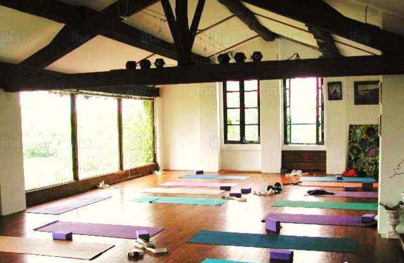
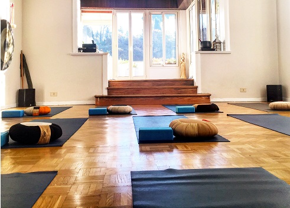
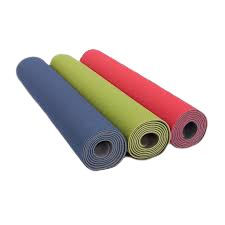
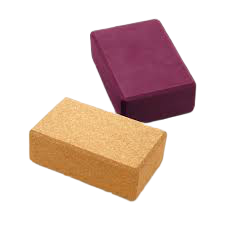
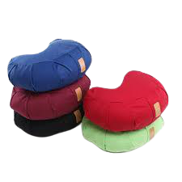
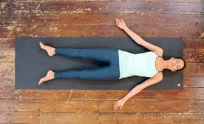

Se non è possibile creare una camera dedicata, basterà ritagliare uno spazio in soggiorno, l’importante è che sia confortevole. Naturalmente non devono mancare i quattro oggetti principali, il tappetino, un cuscino, un blocco da yoga ed una coperta, per coprirsi durante la fase finale di rilassamento.
 
Bisogna scegliere un luogo silenzioso, possibilmente con una finestra da cui arrivi luce naturale e una bella vista, per facilitare il contatto con la natura.
Il tappetino è un accessorio fondamentale, utilissimo per contrastare la pressione sulle ossa mentre si eseguono gli esercizi a terra, per evitare di avvertire fastidi e dolori durante le posizioni che richiedono di stare in ginocchio o sdraiati. Lo spessore del tappetino è determinante, se è troppo sottile, in alcune posizini si potrebbe avere fastidio nei punti di appoggio, e se è troppo spesso, alcune posizini in piedi potrebbero renderci più instabili.

Il blocco da yoga è di aiuto sia per i principianti che per i più esperti. Per i principianti, i blocchi di yoga possono essere utilizzati come sostegno quando la flessibilità non è ancora abbastanza sviluppata, per i più avanzati, il blocco si utilizza in una vasta gamma di asana come sostegno aggiuntivo per l’equilibrio. L’uso più frequente dei blocchi è durante i piegamenti in avanti, nell’eventualità in cui la schiena non sia sufficientemente sciolta da permettere di raggiungere il pavimento con le mani, inoltre il mattone può essere sfruttato come un appoggio per ampliare l'apertura della zona toracica o della colonna vertebrale, in modo tale da permettere un maggiore rilassamento

Anche i cuscini sono molto importanti per chi è alle prime arm
i, come per il tappetino, funge da aiuto per le posizioni sedute, consentendoci di mantenerle più a lungo e non stancare eccessivamente gambe, ginocchia e schiena.

Infine, la coperta è spesso utile per la posizione di rilassamento finale, Shavasana. Questa posizione viene praticata alla fine di qualsiasi sessione di yoga ed ha lo scopo di far rilassare profondamente sia il corpo che la mente e (eventualmente) di far riconoscere al praticante la sua vera natura. Oltre a questo, la posizione ha lo scopo di bloccare e rendere stabili tutti i benefici ottenuti durante la pratica, che possono essere così più facilmente assimilati ed arrivare in profondità.
